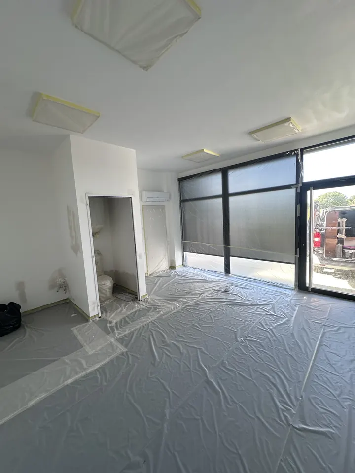
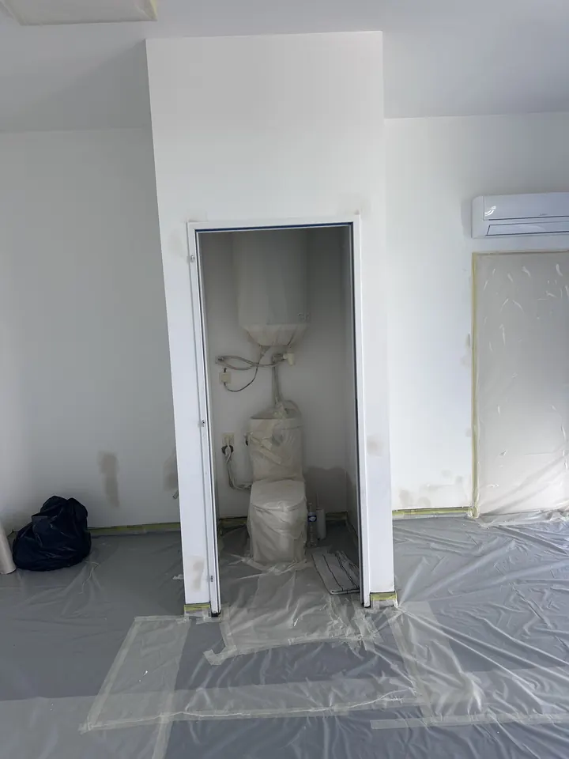
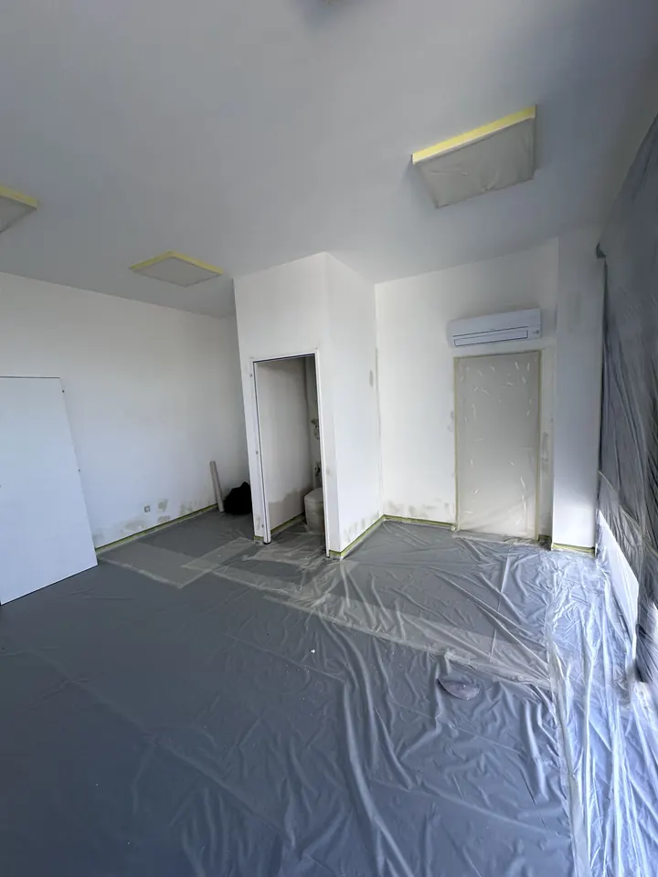

Étape 1
Tout protéger avant le premier coup de rouleau
Sur une opération express, le temps se gagne dès la préparation. Le sol est entièrement bâché, la vitrine, les luminaires, la climatisation et les sanitaires sont emballés, la porte est déposée.
Ensuite, la peinture peut avancer sans s'arrêter pour déplacer, couvrir ou nettoyer quoi que ce soit.


